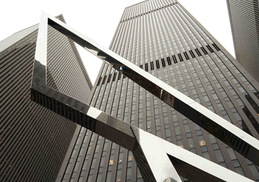

放飞希望，放飞梦想
2017年北京国际风筝节暨京津翼风筝交流活动

“今天是风筝文化的盛会，是风筝人的重大文化节日，是弘扬优秀传统文化，保护非物质文化遗产，促进民间艺术交流，加强风筝人才队伍建设的重要平台。”中国风筝协会副主席王永训在第什里风筝文化旅游节开幕式上表示，第什里风筝文化历史悠久，作为中国风筝流派之一，集北京、天津风筝流派之精华，形成了独具特色的风筝——宫廷风筝，廊坊将这项特色产业做大做强，富民增收。
快递小哥，今日出发
为我国首艘自主研制货运飞船“零窗口”发射
2017年4月20日讯，记者从中国载人航天工程办公室了解到，经空间实验室飞行任务总指挥部研究决定，今日19时41分将发射天舟一号货运飞船。 被称为“快递小哥”天舟一号是我国自主研制的首艘货运飞船，发射升空后将进入高度约380公里的运行轨道
中国送入太空最重的载荷
发射场场区内，各种车辆和人员来往穿梭。决战阶段，天舟一号货运飞船发射前的各项准备工作正在紧张进行。文昌航天发射场是我国唯一能够发射长征七号和长征五号火箭的发射场
天宫一号三次对接天宫二号
北京时间19日凌晨3点多，天宫二号空间实验室与神舟十一号载人飞船成功实施了交会对接。这是中国首次模拟未来空间站的交会对接方式

神舟十一号载人飞船与天宫二号空间实验室成功实现自动交会对接。这是天宫二号自9月15日发射入轨以来，与神舟飞船开展的首次交会对接。
北京时间19日凌晨3点多，天宫二号空间实验室与神舟十一号载人飞船成功实施了交会对接。这是中国首次模拟未来空间站的交会对接方式
Lore Of Ocean
焦点/社会/文学/娱乐
分享.在这里读懂我们